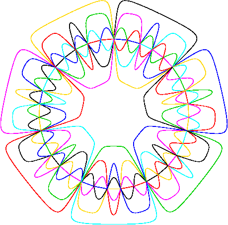

Section 4.3 Symmetric diagrams with \(n = 7\) curves
Referring to the case \(n=7\text{,}\) Grünbaum [Gr75,p.19] wrote: "at present it seems likely that no such diagram exists." However, Grünbaum himself later found examples of such diagrams [Gr92b] and in 1992 additional examples were also discovered by Anthony Edwards and independently by Carla Savage and Peter Winkler. In this section we summarize what is know about symmetric 7-Venn diagrams. They can be classified in various ways depending on whether they are monotone or non-monotone, and simple or non-simple, and we will have a sub-section on each of those 4 possibilities.
Subsection 4.3.1 The Grünbaum encoding
The Grünbaum encoding of a simple symmetric Venn diagram consists of four \(n\)-ary strings, call them \(\mathbf{w}\text{,}\) \(\mathbf{x}\text{,}\) \(\mathbf{y}\text{,}\) \(\mathbf{z}\text{,}\) each of length \((2^{n+1}-4)/n\text{.}\) String \(\mathbf{w}\) is obtained by first numbering the curves clockwise as they appear on the outer face, and then following curve \(n\text{,}\) recording its intersections with each of the other curves. The other strings are obtained by going counter-clockwise and/or starting with one of the innermost curves; in each case the curves must be re-numbered first. For the 3 circle diagram \(\mathbf{w}=\mathbf{x}=\mathbf{y}=\mathbf{z} = 1212\text{.}\) For the 5 ellipse diagram at the top of this page, the strings of the Grünbaum encoding are
\begin{align*}
\amp w = z = 142413141324 \text{ and }\\
\amp x = y = 132414241314.
\end{align*}
Of course, we really only need two of the strings, one starting at the inside and one at the outside, since \(\mathbf{w}\) can be inferred from \(\mathbf{x}\text{,}\) and \(\mathbf{y}\) from \(\mathbf{z}\) -- but it’s convenient to have all four, particularly when checking a diagram by hand. How can \(\mathbf{x}\) be obtained from \(\mathbf{w}\) in general? Think of the strings as being indexed \(i = 1,2,\ldots,M\text{.}\) The rule is \(\mathbf{x}[i] = n-\mathbf{w}[M-i+1]\text{.}\)
In fact, only one string is required, since string \(\mathbf{y}\) is a circular rotation of \(\mathbf{x}\text{.}\) The starting position of \(\mathbf{y}\) can be determined as the unique position in \(\mathbf{x}\) where all curves have been encountered an odd number of times (thus implying that we’re on the inside of all curves). In the 5 ellipse example, the starting position of \(\mathbf{y}\) is the rightmost 1 in \(\mathbf{x}\text{.}\) If a single string is chosen to be the representative, then we take the lexicographically least of all four.
This encoding scheme has its parallels in other disciplines: topologists may recognise the Grünbaum encoding as being closely related to the Gauss code of a knot10.
Tao Cao proved in [Ca] that for simple symmetric monotone Venn diagrams, the Grünbaum encoding uniquely identifies the diagram (up to isomorphism of plane graphs).
Subsection 4.3.2 Simple Symmetric 7-Venn Diagrams
Subsubsection 4.3.2.1 Simple monotone polar symmetric 7-Venn diagrams
For \(n=7\text{,}\) all simple monotone symmetric Venn diagrams with polar symmetry are known; there are six of them, and they are listed below. The first five were discovered by Anthony Edwards using a program to generate candidate diagrams and manual checking to eliminate those candidates that were not Venn diagrams [Ed96] ; however one, Hamilton, was first found constructed by hand by Edwards. He named them after the cities in which they were discovered and we follow his naming convention (but also number them P1-P6). Grünbaum [Gr92b] also discovered "Adelaide". An exhaustive computer search by Frank Ruskey uncovered another, "Victoria", that had been overlooked in Edwards’ manual checking.
- Adelaide (P1):
- Black-and-white Adelaide, Figure 4.7.10.
- One curve coloured green, Figure 4.7.11.
- Rainbow coloured regions, Figure 4.7.12.
- Symmetrically coloured regions, Figure 4.7.13.
- A cylindrical representation, Figure 4.7.14.
- Edwards’ rendering, Figure 4.7.15.
- Tutte embedding, Figure 4.7.16.
- Tutte embedding (one curve colored), Figure 4.7.17.
- A link rendering, Figure 4.7.18.
- Hamilton (P2):
- Black-and-white Hamilton, Figure 4.7.19.
- One curve coloured green, Figure 4.7.20.
- Rainbow coloured regions, Figure 4.7.21.
- Tutte embedding, Figure 4.7.23.
- Tutte embedding (one curve colored), Figure 4.7.24.
- A link rendering, Figure 4.7.25.
- Massey (P3):
- Black-and-white Massey, Figure 4.7.26.
- One curve coloured green, Figure 4.7.27.
- Rainbow coloured regions, Figure 4.7.28.
- Tutte embedding, Figure 4.7.30.
- Tutte embedding (one curve colored), Figure 4.7.31.
- A link rendering, Figure 4.7.32.
- Victoria (P4):
- Black-and-white Victoria, Figure 4.7.33.
- One curve coloured green, Figure 4.7.34.
- Rainbow coloured regions, Figure 4.7.35.
- Tutte embedding, Figure 4.7.37.
- Tutte embedding (one curve colored), Figure 4.7.38.
- A link rendering, Figure 4.7.39.
- Palmerston (P5):
- Black-and-white Palmerston, Figure 4.7.40.
- One curve coloured green, Figure 4.7.41.
- Rainbow coloured regions, Figure 4.7.42.
- Tutte embedding, Figure 4.7.44.
- Tutte embedding (one curve colored), Figure 4.7.45.
- A link rendering, Figure 4.7.46.
- Manawatu (P6):
- Black-and-white Manawatu, Figure 4.7.47.
- One curve coloured green, Figure 4.7.48.
- Rainbow coloured regions, Figure 4.7.49.
- Tutte embedding, Figure 4.7.51.
- Tutte embedding (one curve colored), Figure 4.7.52.
- A link rendering, Figure 4.7.53.
| Adelaide | Hamilton | Manawatu |
| Massey | Palmerston | Victoria |
There are in total 23 monotone symmetric Venn diagrams and 17 of these do not have polar symmetry. This was proven in [CMR] .
- TO DO. A list of the 17 monotone symmetric Venn diagrams without polar symmetry.
- Figure 4.7.54A symmetric diagram whose curves are 5-gons. This diagram is from [Gr92b] and is M2 on our list.
- TO DO A list of all 23 monotone Venn diagrams (includes the six with polar symmetry).
Subsection 4.3.3 Non-monotone simple symmetric 7-Venn diagrams
Branko Grünbaum was the first to discover a non-monotone symmetric 7-Venn diagram. The exact number of symmetric 7-Venn diagrams is not known, but there is strong evidence to suggest that there are 33 of them. The reason for this belief is that Stirling Chow conducted a "hill-climbing" algorithm with randomized choices; this algorithm was run thousands of times without ever discovering more than the 33 that it found in initial runs.
Computer searches by Stiring Chow have uncovered many other non-monotone simple symmetric 7-Venn diagrams. One of them is illustrated in the figures below.
Subsection 4.3.4 Non-simple symmetric 7-Venn diagrams
From computer searches it is apparent that there are many more non-simple diagrams than there are simple diagrams. Using the above techniques, in
[cross-reference to target(s) "ref-Wes03" missing or not unique] the authors generated hundreds of thousands of distinct non-simple monotone symmetric 7-Venn diagrams, including 1576 rigid diagrams (both polar symmetric and not). An example is shown in Figure 4.3.7.
[cross-reference to target(s) "ref-Wes03" missing or not unique]. This diagram has the minimum number of vertices for a monotone diagram.For \(n=7\text{,}\) the value of \(\lceil (2^n-2)/(n-1) \rceil\) is 21, which is is divisible by 7. It is thus possible that there is a minimum vertex symmetric Venn diagram in which every curve passes through every vertex. In fact, we have discovered 60 such diagrams, but all discovered so far are non-rigid. Illustrations of two of them are found in Figure 3.7.14, Figure 3.7.15, Figure 3.7.16, and Figure 3.7.17
Hamburger and Pippert, in [HP03] , using different methods than those above, also constructed a minimum-vertex non-monotone symmetric 7-Venn diagram with several nice features. Their diagram is not rigid either.